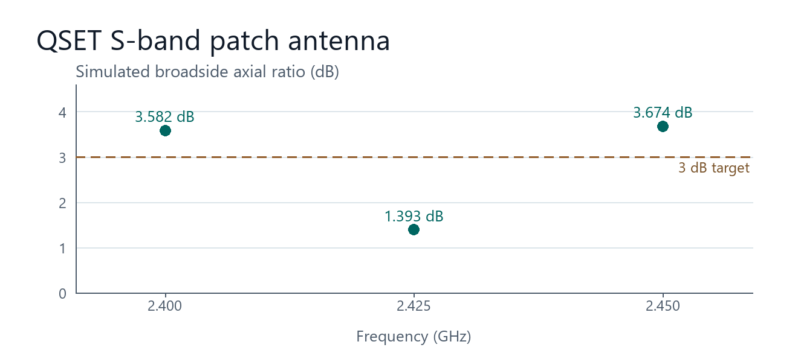

Modulation and protocol research
I compared GFSK, GMSK, BPSK and QPSK for the SatNOGS-COMMS radio. I looked at occupied bandwidth, receiver synchronization, error performance and power-amplifier requirements. Gaussian-filtered FSK options can use a constant-envelope signal, which suits efficient power amplifiers. QPSK carries two bits per symbol versus one for BPSK, giving it twice the uncoded bit rate at the same symbol rate. Both have the same ideal bit error rate at equal Eb/N0 under coherent AWGN assumptions.
I also reviewed CCSDS framing and coding options to understand how synchronization, frame overhead and forward error correction affect the useful telemetry rate. The comparison helped frame the trade-off among throughput, bandwidth and receiver performance. SatNOGS-COMMS documentation
RF link-budget analysis
I worked on a preliminary link budget to relate the radio and antenna choices to the ground receiver’s available margin. The budget starts with transmit power and antenna gains, then subtracts free-space path loss and other losses such as feed and polarization mismatch. Receiver noise turns the resulting received power into a carrier-to-noise density ratio, C/N0.
Subtracting 10 log10 of the bit rate from C/N0 gives the available Eb/N0. Comparing it with the value required for a target error rate gives the link margin for an assumed modulation and coding scheme. This made it possible to reason about how changes in data rate, antenna gain and path loss affect whether a link can close.
- TransmitRadio power, feed loss and antenna gain
- PropagateFree-space and polarization losses
- ReceiveGround antenna gain and receiver noise
- Check marginAvailable versus required Eᵦ/N₀
Antenna design and simulation
I used MATLAB Antenna Toolbox to model a 50 Ω, single-feed microstrip patch. Truncating opposite corners perturbs two orthogonal patch modes. Circular polarization depends on exciting those modes with nearly equal amplitudes and a 90° phase difference. I varied the patch size, corner cuts and feed position and checked how mesh settings affected the simulated impedance match and broadside axial ratio.
The initial study used a published CubeSat patch as a starting point. Rather and Suganthi, Electrically Small S-band Antenna for CubeSat Applications
Simulation evidence
The design iteration used a 39.60 mm square patch with two opposite 6.75 mm corner truncations and a single coaxial feed. The chart and table reproduce the three sampled frequencies in my antenna optimization notes.

| Frequency | Axial ratio | S₁₁ |
|---|---|---|
| 2.400 GHz | 3.582 dB | −12.279 dB |
| 2.425 GHz | 1.393 dB | −10.576 dB |
| 2.450 GHz | 3.674 dB | −10.193 dB |
The center sample met the 3 dB axial-ratio and −10 dB S₁₁ targets. The axial ratio exceeded its target at both sampled band edges. Full-band and hardware validation would require further work.